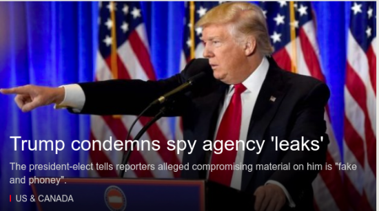

president-elect Dnal J. Trump on Wednesday in New York held a news conference for the first time in six months.
Trump's News Conference: 10 Key Moments
Pushback on a leaked intelligence repor, sharp words for CNN and a new appointee for the Department of Veterans Affairs
Analysis
Fact Checking
Transcript
A Made-for-TV Spectacle
By SUSANNE CRAIG and ERIC LIPTON 7:10 PM ET
Mr. Trump plans to turn over his business operations to a trust controlled by his two olderst sons, a solution said to be whollly inadequateby the government's top ethics moniot.
872 Comments
CHARLES M. BLOW
Ode to Obama
You don't know what you've got till it's goneDonald Trump: A Modern Machurian Candidate?You don't know what you've got till it's goneThe onus is on the president-elect to prove he's not Putin's puppet.
Editorial: Trying to Head OFF a Health Care Calamity
Disability: My Life With Paralysis, It's a
Should Companies Keep Drivers OFF Social Media?
Apple has been sued in a crash in which a driver was using FaceTimeThis WEEK IN HATE
Anti- Semitic Note Promises 'Mayhem'
Hate crimes and incidents of harassment reportted in recent days
Bruni: The Dark Magic of Kellyanne Conway
Fridman: Online and Scared
Times INSIDER
"What's the Difference Between the National Debt and the Federal Deficit?"
THE CROSSWORD
Play Today's PuzzleSince its cone-shaped fossils were found in the 1800s, the hyolith has perpled scientists. But a student's research has finaly fit the hyolith on the evolutioinary treeThe sports landscape is littered with falled pro football leagues, but a sports agent thingks he has found a model for success
THE 45TH PRESIDENT
'I Think It was Russia,' Trump Says of D.N.C.
BY Julie HICSHFELD DAVIS and MAGGIE HABERMAN 2:58 PM ET
President0 elect Donald J. Trump conceded for the first time that Russia had carreied out ccyberattacks during the presidential election.
But Mr. Trump sidesteped repeated questions about whether he or anyone in his team had contact with Russia during the campaign.
CONFIRMATION HIGHLIGHTS
Rubio Aggressively Questions Tillerson on Russia
By MATT FLEDGENHEIMER, DAVID E SANGER and EMMARIE 6:34 PM ET
"Is Vladimir Putin a waf criminal?" Marco Rubio asked Rex Tillerson. The secretary of state nominee said no.